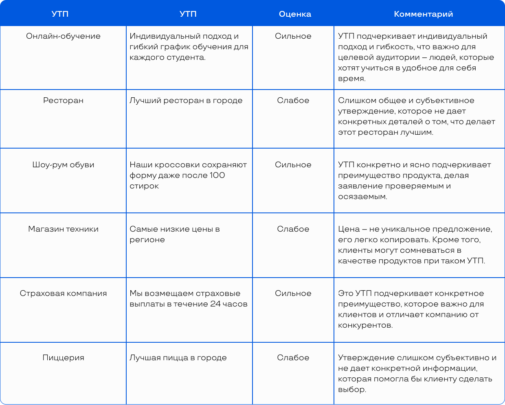

Разберем пример
Предположим, ваш клиент – владелец пиццерии.
Его потребность – продать пиццу и получить прибыль, желание – сделать свою пиццерию лучшей в городе.
Его клиенты хотят утолить голод свежей качественной едой (их потребность) и хотят насладиться вкусом, возможно, конкретной пиццы, при этом им будет приятно получить эту пиццу быстро (их желание).
Обмен здесь происходит, когда пиццерия предоставляет свою продукцию клиентам, а они платят за это деньги. Чем больше клиентов пиццерия сможет удовлетворить, тем больше обменов произойдет и тем выше будет конечный доход владельца.
Задача маркетолога во всей этой связке – доносить ценность продукта компании для клиентов, мотивировать их приходить/делать заказ чаще за счёт выстроенной маркетинговой стратегии, привлекать новых гостей через рекламу.
Задача непосредственно SMM-специалиста – формировать интерес и лояльность аудитории через контент, создавая образ компании в социальных сетях.
То есть пиццерия как система старается удовлетворить потребности клиентов лучше, чем конкуренты, а вы – помогаете потребителям выбрать пиццерию вашего клиента, а не другую.
6 советов начинающему SMM-специалисту:
Изучайте тенденции.
Социальные сети очень динамичны, постоянно появляются новые тренды, функции, форматы.
Нужно постоянно быть в курсе этих новинок и пробовать их в действии.
Экспериментируйте. Не бойтесь пробовать что-то новое, тестировать форматы, стили, темы. Это поможет понять, что лучше всего сработает для вашей аудитории.
Учите основы маркетинга и психологии.
В социальных сетях также работают общие принципы маркетинга и психологии потребителей, и чем глубже вы понимаете эти принципы, тем эффективнее сможете привлекать и удерживать аудиторию.
Учитесь на опыте других. Следите за успешными брендами в социальных сетях, анализируйте их стратегии, идеи, подходы к взаимодействию с аудиторией.
Стройте личный бренд. Для SMM-специалиста важно не только уметь продвигать бренды, но и строить собственный личный бренд.
Это поможет привлекать клиентов, демонстрировать свои профессиональные качества и устанавливать контакты в профессиональной среде.
Непрерывное обучение.
Мир социальных сетей меняется очень быстро, поэтому постоянное обучение и улучшение навыков является ключом к успешной карьере в SMM.
Целевая аудитория. Зачем определять ЦА. Правильный подход к анализу ЦА.
Целевая аудитория (ЦА) – это группа людей, которые наиболее вероятно заинтересуются продуктом или услугой, которую предлагает ваш клиент.
Это те люди, которых компания или человек хочет достичь своими сообщениями или предложениями.
Целевая аудитория может быть определена по различным критериям, таким как:
✓ пол
✓ возраст
✓ географическое местоположение
✓ образование
✓ профессия
✓ интересы и другие характеристики.
Понимание целевой аудитории критически важно для успеха любой маркетинговой стратегии.
Оно позволяет оптимизировать ресурсы и усилия, так как разные группы людей могут иметь различные потребности, предпочтения и поведенческие характеристики.
От этого зависит то, как вы будете строить стратегию коммуникации, какие каналы и форматы контента будете использовать, как визуально будет выглядеть ваш контент и каким образом вы будете взаимодействовать с аудиторией.
6 основных шагов для определения целевой аудитории:
Анализ продукта или услуги.
В первую очередь вам нужно тщательно изучить продукт или услугу клиента. Для кого они могут быть полезны? Какие проблемы они решают? Какие важные характеристики у них есть?
Анализ лояльной аудитории / текущих покупателей.
Если у бизнеса уже есть клиенты, проанализируйте их. Какие общие характеристики у них есть? Почему они выбирают этот продукт / услугу?
Анализ конкурентов.
Кто является конкурентом вашего клиента? Какую аудиторию они привлекают? Что можно узнать у них?
Определение демографических, психографических и поведенческих характеристик.
Возраст, пол, место жительства, образование, профессия и другие демографические данные помогут вам понять примерный портрет целевой аудитории.
Интересы, убеждения, ценности, мотивы, стиль жизни и другие психографические характеристики позволят вам вывести это понимание на более глубинные уровни.
Затем проанализируйте, как ваша целевая аудитория ведет себя в интернете: какие сайты и социальные сети посещает, какие действия совершает?
Сегментация аудитории.
Разбейте целевую аудиторию на группы или сегменты схожих характеристик. Это позволит более точно настроить маркетинговые усилия под интересы каждой группы.
Исследование.
Проведите исследование, включающее опросы фокус-групп (кастдевы) или анализ данных, чтобы подтвердить свои предположения о характеристиках аудитории и их потребностях.
Например: ваш клиент – это компания, которая занимается продажей домашних тренажеров. Как будет строиться ваш исследование ЦА?
1. Анализ продукта или услуги.
Продуктом являются домашние тренажеры.
Они позволяют людям заниматься физическими упражнениями без необходимости посещения спортзала.
Продукция такого типа может быть полезна для людей, которые хотят поддерживать форму и заботятся о своем здоровье, но у которых нет времени или возможности посещать спортзал.
2. Анализ лояльной аудитории / текущих покупателей.
Вы заметили, что большая часть текущих клиентов – это мужчины и женщины в возрасте от 25 до 45 лет, которые ведут активный образ жизни и стремятся быть в хорошей физической форме.
3. Анализ конкурентов.
Конкуренты также продают домашние тренажеры и аксессуары для фитнеса.
Вы видите, что они также нацелены на аудиторию, интересующуюся здоровым образом жизни и фитнесом.
Вы можем изучить их маркетинговые стратегии и попытаться улучшить их для привлечения большего числа клиентов.
4. Определение демографических, психографических и поведенческих характеристик.
Ваша основная целевая аудитория – мужчины и женщины в возрасте от 25 до 45 лет, проживающие в городах, с доходом выше среднего, ведущие активный образ жизни.
Такая целевая аудитория ценит здоровый образ жизни, уделяет время своему физическому здоровью и фитнесу, ценит удобство домашних тренировок. Они могут быть заняты, поэтому ценят возможность тренироваться в любое удобное для них время.
Представители такой целевой аудитории могут искать информацию о тренажерах в интернете, сравнивать разные модели и бренды, искать отзывы о продуктах и советы о тренировках.
5. Сегментация аудитории.
Аудитория компании, специализирующейся на продаже домашних тренажеров, может быть сегментирована следующим образом: главный сегмент – активные молодые взрослые (возраст 25-40 лет), стремящиеся к поддержанию здоровья и доступному фитнесу; дополнительные сегменты – семейные покупатели, интересующиеся тренировками вдвоем или с детьми; профессиональные спортсмены и фитнес-энтузиасты, стремящиеся к постоянному улучшение результатов; и, наконец, пенсионеры, заботящиеся о здоровье и поддержании физической активности.
6. Исследование.
Для изучения рынка и спроса на домашние тренажеры было проведено исследование в несколько этапов: сначала провели анализ данных онлайн-платформ и интернет-форумов (чтобы выявить популярные тренды, потребности и найти отзывы клиентов).
Затем были собраны фокус-группы с активными спортсменами и рядовыми потребителями, где обсуждались предпочтения по типам тренажеров, особенности использования и ожидания от продукта.
Опросы были также распространены среди других сегментов: молодые взрослые, семейные потребители.
Все это позволило определить запросы аудитории, а также получить ценные инсайты для дальнейшей разработки стратегии продвижения: какие предложения релевантны для ЦА, что мотивирует к покупке тренажеров разные группы аудитории, какие ценности у потребителей и т.д.
5 правил грамотного подхода к анализу целевой аудитории:
1. Определите цели анализа. Перед началом анализа, важно четко определить, какие цели вы преследуете.
Это может быть привлечение новых клиентов, увеличение продаж, расширение на новые рынки или улучшение отношений с текущими клиентами.
Цели должны быть конкретными, измеримыми, достижимыми, реалистичными и временно ограниченными (SMART).
Все это позволило определить запросы аудитории, а также получить ценные инсайты для дальнейшей разработки стратегии продвижения: какие предложения релевантны для ЦА, что мотивирует к покупке тренажеров разные группы аудитории, какие ценности у потребителей и т.д.
2. Исследуйте своих текущих клиентов.
Ваши текущие клиенты - это отличный источник информации о том, кто может быть вашей целевой аудиторией. Изучите их демографические характеристики, предпочтения, привычки и отношение к вашему продукту или услуге.
3. Оцените конкурентов.
Понимание того, кто является целевой аудиторией ваших конкурентов, может помочь вам определить свою собственную. Посмотрите на их рекламные кампании, активность в социальных сетях, отзывы клиентов и другие данные, чтобы получить представление о их целевой аудитории.
4. Используйте разнообразные методы исследования.
Опросы и аналитика веб-сайта, могут дать вам большое количество данных о вашей целевой аудитории. Интервью и группы фокусировки, могут дать вам более глубокое понимание мотивов и отношений вашей целевой аудитории.
5. Регулярно пересматривайте и обновляйте свой анализ.
Потребности и предпочтения вашей целевой аудитории могут меняться со временем. Регулярный пересмотр и обновление вашего анализа целевой аудитории поможет вам оставаться актуальными и эффективными в ваших маркетинговых стратегиях.
Основные ошибки при проведении анализа целевой аудитории:
1. Слишком широкое определение ЦА.
Например, если вы продвигаете косметический бренд, то вашей целевой аудиторией не должны быть «все женщины».
Это слишком широкий сегмент, который включает слишком разные группы с разными потребностями и интересами.
Лучше сосредоточиться на более узкой группе, например, «женщины от 20 до 30 лет, интересующиеся натуральной косметикой».
2. Обобщение.
Представление, что целевая аудитория однородна и имеет одинаковые потребности, – ошибочно.
Реальность часто более разнообразна, и обобщенный подход может не учитывать важные нюансы.
3. Поверхностное исследование:
Ошибкой может быть недостаточно глубокое изучение целевой аудитории.
Опираясь только на общие знания, можно упустить важные детали, которые могут существенно влиять на маркетинговую стратегию.
4. Ограничение исследования только одним или двумя источниками данных.
Это может привести к неполной картине.
Используйте различные методы сбора данных, включая опросы, интервью, аналитику веб-сайта и социальных сетей, чтобы получить более полное понимание целевой аудитории.
5. Игнорирование конкурентов.
Неучет конкурентов и их подходов к целевой аудитории может привести к потере конкурентного преимущества.
6. Основание на стереотипах или исход от себя.
Разработка стратегии на основе стереотипных представлений о целевой аудитории, равно как и полагание, что целевая аудитория подобна вам или вашим предпочтениям, может привести к неточным результатам, недооценке реальных различий и неверной настройке стратегии.
Важно полагаться на факты и данные: далеко не все пожилые люди не умеют пользоваться интернетом, не все молодые люди любят видеоигры.
7. Неопределенность в целях.
Если вы не знаете, чего хотите достичь с помощью анализа целевой аудитории, вы можете потратить много времени и ресурсов на сбор неприменимой информации.
8. Игнорирование отзывов клиентов, недостаточное взаимодействие.
Отзывы и обратная связь от клиентов – это ценный источник информации о целевой аудитории, которым не стоит пренебрегать.
Отсутствие взаимодействия с реальными представителями аудитории может привести к неправильным предположениям и недостаточному пониманию потребностей ЦА.
9. Игнорирование культурных особенностей/менталитета.
Если ваш клиент работает в нескольких странах или регионах, важно учитывать культурные особенности и различия в поведении потребителей.
10. Игнорирование изменений.
Рынок и аудитория постоянно меняются.
Ошибка заключается в том, что анализ проводится один раз и забывается.
Аудиторию следует регулярно пересматривать и анализировать новые тренды.
Уникальное торговое предложение (УТП): что такое УТП и на чем оно строится, как использовать УТП для повышения продаж
Уникальное торговое предложение (УТП) – это ключевое выделение особенностей продукта или услуги, которое делает их привлекательными для целевой аудитории. Также это основное преимущество, отличающее от конкурентов.
Создание эффективного УТП может быть сложной задачей, но есть простая формула, которую можно использовать как отправную точку:
УТП = [Уникальность] + [Ценность] + [Конкретность], где:
Уникальность:
ваше предложение должно чем-то отличаться от предложений конкурентов.
Это может быть свойство товара, новизна услуги, которую вы продвигаете, или даже подход вашего клиента к бизнесу.
Ценность для клиента:
уникальность сама по себе недостаточна.
Ваше предложение также должно быть ценным для клиента, решать его проблемы или удовлетворять его потребности.
Конкретность:
чем более конкретным будет УТП, тем более убедительным оно будет для потребителей.
Скажите не просто «наши продукты высокого качества», а «наши джинсы не теряют форму после 100 стирок».
Для создания действительно сильного УТП нужно провести глубокое исследование целевой аудитории, конкурентов и продуктов / услуг.
Ошибки при разработке УТП могут снизить эффективность маркетинговых усилий
5 ошибок при разработке УТП:
1. Недостаточная конкретность.
Слишком общее и абстрактное УТП может оставить аудиторию в замешательстве и не дать четкого представления о том, что делает ваш продукт или услуга уникальным.
Оно должно быть ясным, специфичным и выделить ключевые особенности.
2. Отсутствие ценности для аудитории.
УТП должно быть направлено на решение проблем и удовлетворение потребностей клиента.
Если УТП сосредоточено только на достижениях компании или особенностях продукта, оно может не заинтересовать потенциального клиента.
3. Копирование конкурентов.
Если УТП не отличается от того, что предлагают конкуренты, оно не поможет отстроиться от них на рынке.
Важно выявить и подчеркнуть те особенности, которые делают продукт или услугу по-настоящему уникальными.
4. Неясное формулирование или слишком общие слова.
Сложные и запутанные формулировки могут запутать аудиторию и оставить их без понимания того, что вы пытаетесь донести.
УТП должно быть простым и легко понимаемым для целевой аудитории.
Но нужно различать «простые» формулировки и «неинформативные»: словосочетания типа «лучший продукт», «высокое качество» – общие и не дают понимания, в чем конкретно преимущество.
5. Отсутствие обновления.
Рынок постоянно меняется, и то, что было уникальным вчера, может уже не быть актуальным сегодня.
Не обновление УТП и не учет изменений в потребностях аудитории может привести к утрате конкурентоспособности.
УТП можно использовать во всех ваших маркетинговых материалах и сообщениях для повышения продаж. Вот несколько способов:
рекламные кампании: при создании рекламных кампаний используйте УТП, чтобы привлекать внимание и убеждать потребителей выбрать вашего клиента;
контент-маркетинг: статьи, видео, подкасты и другой контент должны подчеркивать УТП и показывать потребителям, почему продукт или услуга лучше, чем у аналогичных компаний в нише;
продажи и обслуживание клиентов: команда продаж должна знать и использовать УТП, чтобы убедить потенциальных клиентов выбрать вашего клиента, а команда по обслуживанию клиентов должна знать УТП,
чтобы помочь им понять,
почему они выбрали правильно.
Допустим, вы работаете с клиентом, который владеет бизнесом, предлагающим персональные тренировки по бегу.
Какое УТП вы можете разработать?
Например:
«Персональные тренировки по бегу с профессиональным тренером, бывшим олимпийским чемпионом».
Это УТП подчеркивает уникальность (тренировки ведет бывший олимпийский чемпион), предлагает ценность (персональный подход, профессиональный тренинг) и конкретно указывает на преимущества.
Разберем еще несколько примеров:
